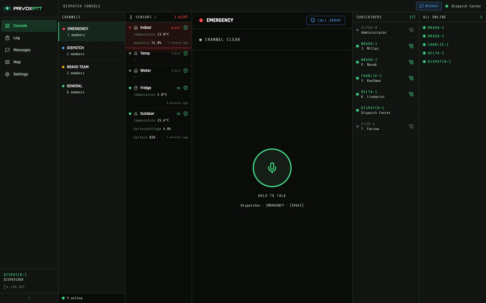
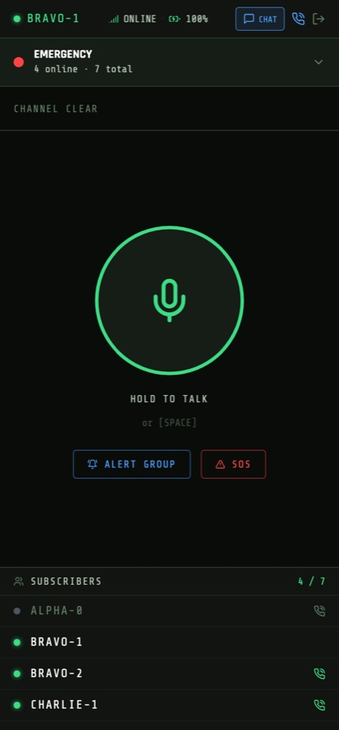

ЧАСТНАЯ СИСТЕМА ОПЕРАТИВНОЙ СВЯЗИ
Связь для тех, кто отвечает за объект
Охрана, инженеры, эксплуатация и управление — в одном канале. На телефонах, которые уже есть у людей, и на рациях там, где они нужны.
ЗАДАЧА
Люди распределены, а решения нужны сейчас
На любом действующем объекте одновременно работают несколько служб, и они разбросаны по территории: охранник на посту, инженер в подвале, горничная на этаже, управляющий в офисе.
Телефонный звонок для этого не годится: нужно знать номер, дождаться ответа, а потом повторить то же самое второму и третьему. Обычная рация решает вопрос на одной территории, но упирается в дальность и не связывает объекты между собой.
Дальность
Аналоговая рация не пробивает за пределы объекта. Между двумя площадками связи уже нет.
Разрозненность
У каждого объекта свой парк раций и свои частоты. Общей картины у руководства нет.
Ночь и выходные
Когда за пультом никого, происшествие обнаруживают утром — по последствиям.
РЕШЕНИЕ
Рация поверх сотовой сети и Wi-Fi
PRIVOX — система связи «нажал и говоришь», работающая через обычный интернет. Голос уходит всей группе мгновенно, без набора номера и ожидания ответа.
Расстояние при этом роли не играет: люди в одной группе могут находиться на разных объектах, в разных городах и странах — и слышать друг друга так же, как если бы стояли рядом.
Сервер может стоять у вас. Это отличает PRIVOX от облачных сервисов связи: переговоры и данные остаются в вашем контуре, а работа системы не зависит от чужой подписки и чужих решений. Разместить его можно и у нас — выбор за вами.
ГЛАВНОЕ ДЛЯ ПОДРЯДЧИКА
Много объектов — одна система
Охранная или управляющая компания обслуживает не один адрес, а десяток: отели, виллы, стройки, жилые комплексы. Обычно на каждом свой парк раций, свои частоты и никакой общей картины.
В PRIVOX объекты живут в одной системе, но не мешают друг другу: у каждого свои группы и свои люди, а руководство видит всё сразу. Смена на одном объекте не слышит эфир соседнего — если только вы сами не заведёте общий канал для старших.
Свои каналы
Охрана, инженеры, управление — раздельные группы. Кому слушать, кому говорить, решаете вы.
Общий пульт
Дежурный видит смены всех объектов, карту людей и тревоги — на одном экране.
Новый объект без новой инфраструктуры
Добавить площадку — это завести группу и раздать доступ, а не закупать и настраивать оборудование заново.
ЖИЗНЕННЫЙ ЦИКЛ
Связь нужна раньше, чем открывается объект
Стройка — это уже команда, которой нужна связь. А после сдачи объект не пустеет: на нём появляется постоянный персонал, и связь нужна ему каждый день на всём сроке эксплуатации.
Строительство
Прораб, охрана периметра, инженеры, подрядчики. Территория большая, людей много, связь нужна сразу.
ВРЕМЕННАЯ КОМАНДА
Сдача и пусконаладка
Появляются службы эксплуатации, идёт приёмка. Работают одновременно строители и будущий персонал.
ПЕРЕХОДНЫЙ ПЕРИОД
Эксплуатация
Охрана, инженерная служба, обслуживание, уборка, бассейн и территория, управление объектом.
ПОСТОЯННАЯ КОМАНДА — НА ВЕСЬ СРОК ЖИЗНИ ОБЪЕКТА
Следующие объекты
Компания берёт новый адрес — система уже есть, добавляется ещё одна площадка.
РОСТ БЕЗ ПЕРЕЗАПУСКА
ОТЛИЧИЕ
Объект тоже выходит на связь
Кроме людей к системе подключаются датчики: температура в холодильных камерах, протечка и затопление, состояние помещений. Тревога приходит в тот же канал, где работает смена, и дублируется в Telegram руководителю.
Датчик подключается без переделки оборудования — сервер сам опрашивает его по штатному интерфейсу. У каждого свои границы нормы: холодильнику одни, техническому помещению другие.
Своя норма для каждого
Минимум, максимум или оба. Выход за границу поднимает тревогу немедленно.
Одна тревога, а не двести
Сигнал поднимается в момент выхода за порог, а не каждые пятнадцать секунд, пока держится проблема.
Молчание — тоже тревога
Датчик, переставший отвечать, опаснее датчика с плохими показаниями: камера может размораживаться час, а на экране висит последняя нормальная температура.
ПУЛЬТ
Обстановка на одном экране
Дежурный видит каналы объектов, состав смены с признаком, кто сейчас на связи, датчики и их состояние — и может говорить в любую группу, не входя в неё.

Пульт диспетчера. Слева каналы, следом датчики объекта — один в тревоге, два молчат. Справа смена: видно, кто на связи, и у каждого кнопка вызова.

Карта смены. Метки движутся вместе с людьми, в подсказке — позывной и скорость. Видно, кто ближе к месту происшествия.
УСТРОЙСТВА
Телефоны и рации в одном канале
Человек с рацией, человек с телефоном и диспетчер за компьютером находятся в одной группе и слышат друг друга. Никаких шлюзов и переходников.

ТЕЛЕФОН
Приложение для Android и iPhone. Вызов будит телефон в кармане — даже если приложение закрыто.

РАЦИЯ
Аппаратная кнопка разговора, управление одной рукой и в перчатке. Там, где телефон неудобен.
Какие устройства нужны именно вам — предмет разговора. Где-то достаточно телефонов, которые у людей уже есть, где-то на постах нужны рации. Подбираем под задачи объекта, а не продаём комплект «как у всех».
ЧТО ЕЩЁ ВХОДИТ
Не только голос
| Возможность | Зачем на объекте |
|---|---|
| Личный вызов | Разговор один на один, как по телефону, — не занимая общий канал. |
| Сбор смены | Одна кнопка — и телефоны всех участников звонят по-настоящему, даже ночью. |
| Тревожная кнопка | Сигнал уходит поверх границ групп, всей организации сразу. |
| Сообщения и фото | Адрес, номер машины, снимок поломки — голосом такое не передашь. |
| Права участников | Кому говорить, кому только слушать, кому делиться координатами. |
| Сроки доступа | Сезонному работнику и подрядчику доступ выдаётся до даты и гаснет сам. |
| Заведение по QR | Человек сканирует карточку камерой и оказывается в эфире — без логинов и настройки. |
С ЧЕГО НАЧАТЬ
Пилот на одном реальном объекте
Разговоры о связи бесполезны, пока её не попробовали в деле. Поэтому предлагаем начать с пробного развёртывания на одной вашей площадке — с настоящими людьми и настоящей сменой.
Объём, срок и состав подбираем под объект: сколько человек, какие службы, нужны ли рации. По итогам смотрим на то, что видно только на практике — устойчивость связи в реальных стенах, переходы между Wi-Fi и сотовой сетью, как люди пользуются этим без обучения.
Разговор
Смотрим на ваши объекты и службы: где связь рвётся сегодня и что мешает больше всего.
Показ системы
Показываем вживую: связь, пульт, карту, датчики. Можно на вашем объекте.
Пробное развёртывание
Одна площадка, реальная смена. Условия обсуждаем — они зависят от объёма.
СВЯЗАТЬСЯ
Готовы показать систему в работе
Напишите, и договоримся о показе — на вашем объекте или удалённо. Расскажем честно, что система умеет сегодня, а что в планах.
Скачать PDF